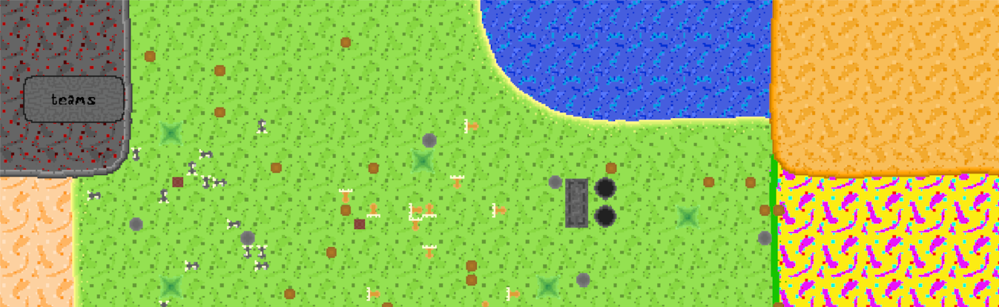

 
<div class="container mt-5 mx-5">
  <h1 class="circle7">News
  </h1>
  <!-- 2. Update -->
  <p style="text-decoration: underline;">03.04.2022</p>
  <p class="lightGrey">
    Internship is over. I talked to many nice people and learned a lot about Angular and Java JPA. It was a experience to work 40h a Week for 6 Months that I wanted
    to make. I worked for a company in Germany called innovas GmbH. The game got a new Framework for drawing sprites in the last months. It runs with directX 11 now but 
    its not quite integrated, so there are some Features that are currently not working. The older version just loaded every pixel on a buffer and passed this buffer to the GPU. 
    The new version takes advantage of DirectX 11 pieces, to boost performance and to have a own DirectX 11 Framework that I can use as I wish. Currently I am planning my 
    Bachelor Thesis.
    </p>
  <!-- 1. Update -->
  <p style="text-decoration: underline;">05.12.2022</p>
  <p class="lightGrey">
    I am a student in cologne and make an Internship right away unitl March 30, so i put every week
    an average of 10 hours into the game. Programming and designing is just a hobby and I try to not pressure myself to
    meet some deadline, which doesnt mean that I dont like seeing progress. The game needs some time to get in a stage where the user
    has a mission as a player instead of just playing without a purpose but if you are interested in trying out the features
    the Game is ready to go. The first version of the game (v1.0) will be published soon.
    </p>
  <h1 class="circle7">Some included features
  </h1>
    <label class="label-bold" style="width: 50%;white-space: pre-line">
    <p>· some animals, building, bioms</p>
    <p>· day/night cycle and fog of war</p>
    <p>· relation system</p>
    <p>· interactions with the enviroment</p>
    <p>· inventory system</p>
    </label>
</div>